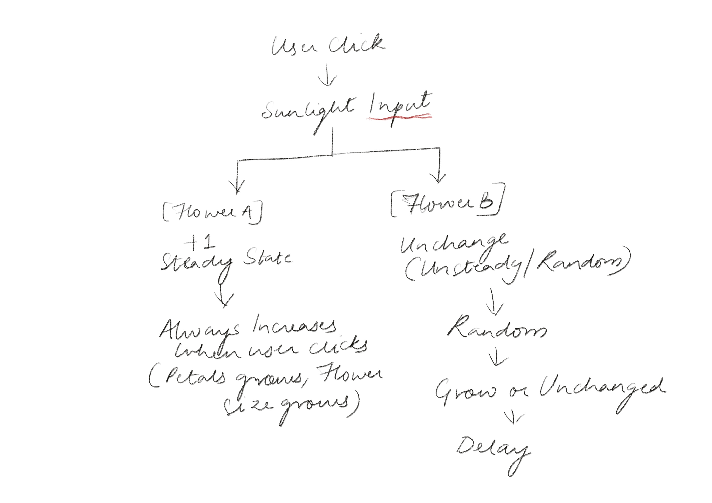
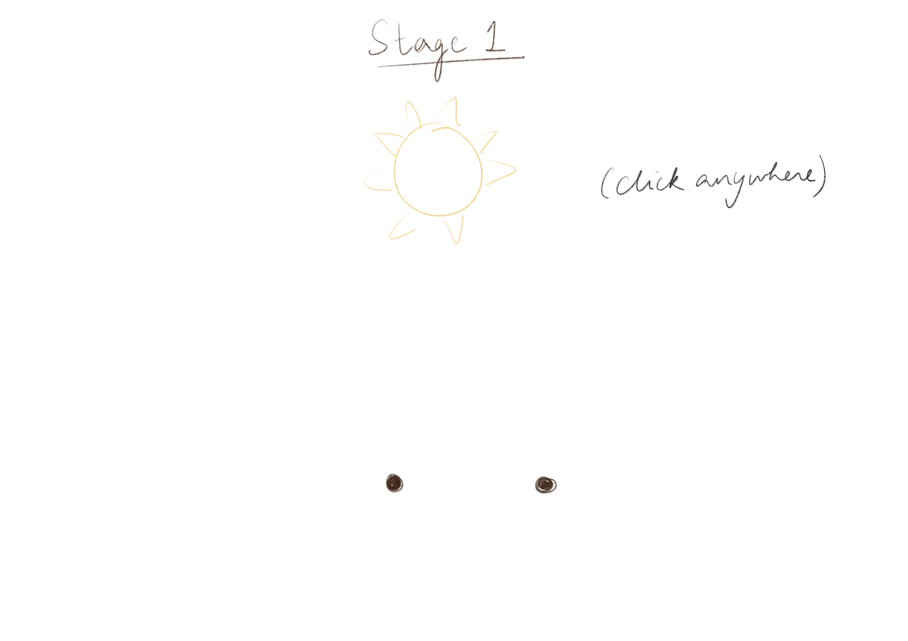
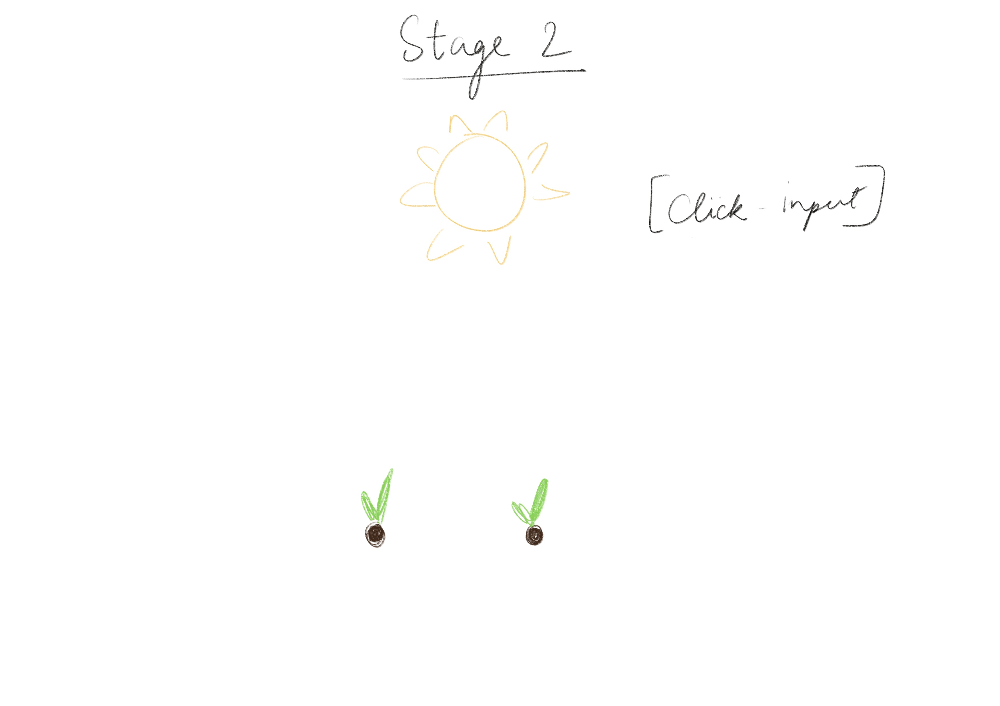
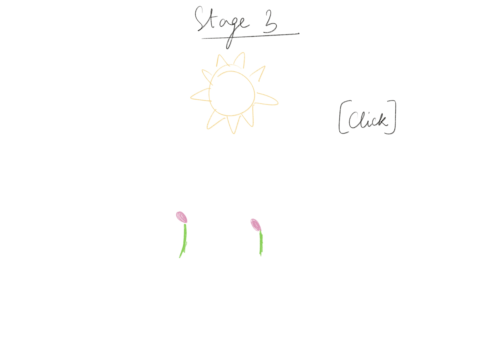
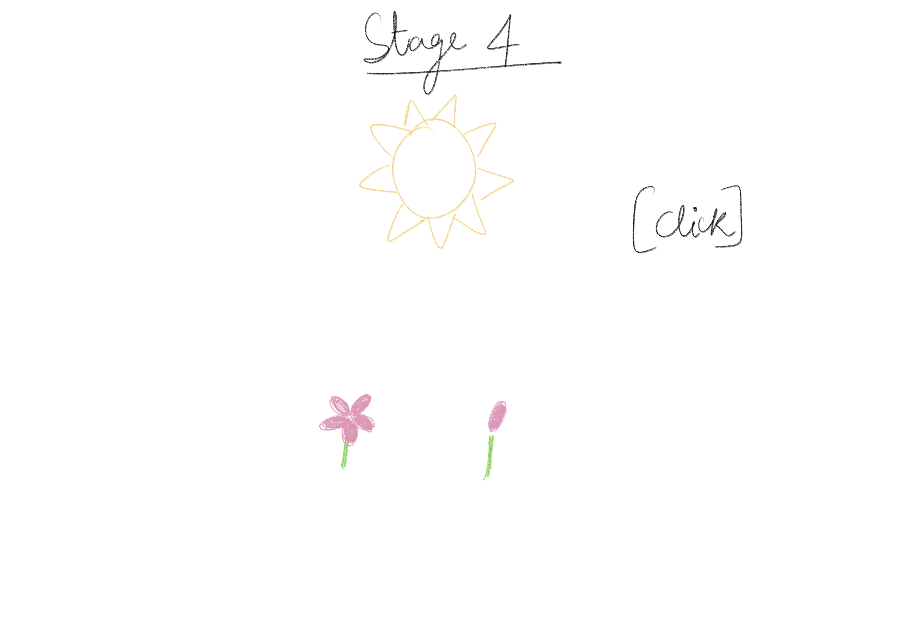
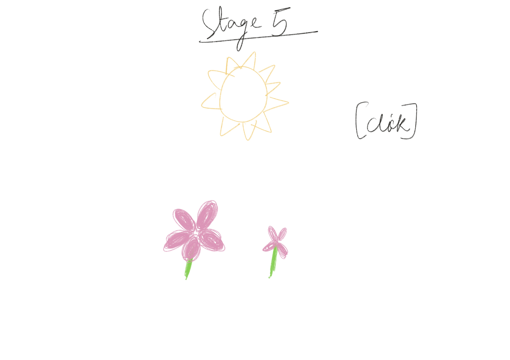

The primary input(s): User Clicks (sunlight)
The system state(s): Each flower has its own internal states
Flower A (Steady Growth)
Flower B (Uneven/Random Growth)
Where time affects behavior: Flower B stalls and builds up to the delay in the growth
Where does friction appear: Flower B sometimes ignores a click. Growth is paused in Flower B at times.
What is the core rule of this system? Each click provides equal nurturing input to both flowers, but growth outcomes are not equal. One flower responds predictably. The other responds irregularly. Equal care does not guarantee equal blooming.
What changes over time? Petal count, Stem height, Bloom size, Symmetry, Response speed to input
Where does the system become uneven? The unevenness appears when Flower B ignores or delays growth despite identical clicks. The friction is emotional: the user expects fairness. The system denies it. Over time, this gap widens.
Why is this idea worth developing further? Instead of a reward system, it becomes a reflection of growth, comparison, and uneven development. It creates subtle tension without conflict. It invites users to reflect on the nature of growth and fairness in a non-judgmental way.